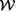
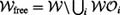

1.3 Mathematical Style
Our goal is to present topics in an intuitive manner while helping the reader appreciate the deeper mathematical concepts. Often we suppress mathematical rigor, however, when intuition is sufficient. In many places proofs of theorems are omitted, and the reader is referred to the original papers. For the most part, mathematical concepts are introduced as they are needed. Supplementary mathematical material is deferred to the appendices to allow the reader to focus on the main concepts of the chapter.
Throughout this book, robots are assumed to operate in a planar or three-dimensional ambient space, sometimes called the workspace . This workspace will often contain obstacles; let be the ith obstacle. The free workspace is the set of points  where the \ is a subtraction operator.
Motion planning, however, does not usually occur in the workspace. Instead, it occurs in the configuration space (also called C-space), the set of all robot configurations. We will use the notation R(q)to denote the set of points of the ambient space occupied by the robot at configuration q. An obstacle in the configuration space corresponds to configurations of the robot that intersect an obstacle in the workspace, i.e., . Now we can define the free configuration space as . We sometimes simply refer to "free space" when the meaning is unambiguous.
In this book we make a distinction between path planning and motion planning. A path is a continuous curve on the configuration space. It is represented by a continuous function that maps some path parameter, usually taken to be in the unit interval [0, 1], to a curve in (figure 1.10). The choice of unit interval is arbitrary; any parameterization would suffice. The solution to the path planning problem is a continuous function c ∊ C0 (see appendix C for a definition of continuous functions) such that
When the path is parameterized by time t, then c(t) is a trajectory, and velocities and accelerations can be computed by taking the first and second derivatives with respect to time. This means that c should be at least twice-differentiable, i.e., in the class C2. Finding a feasible trajectory is called trajectory planning or motion planning.
In this book, configuration, velocity, and force vectors will be written as column vectors when they are involved in any matrix algebra. For example, a configuration will be written in coordinates as q = [q1, q2, ..., qn]T. When the vector will not be used in any computation, we may simply refer to it as a tuple of coordinates, e.g., q = (q1, q2, ..., qn), without bothering to make it a column vector.